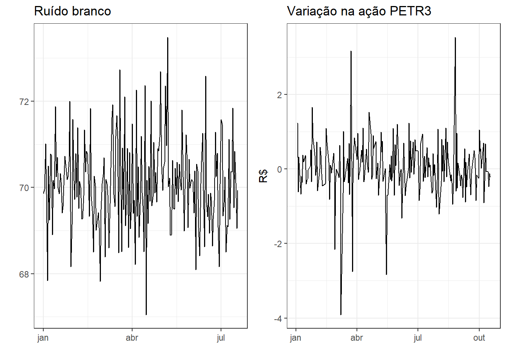
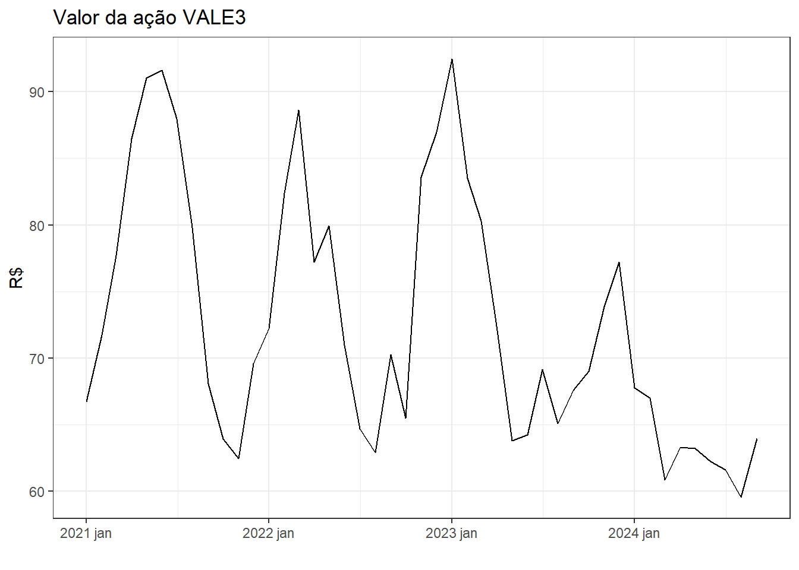
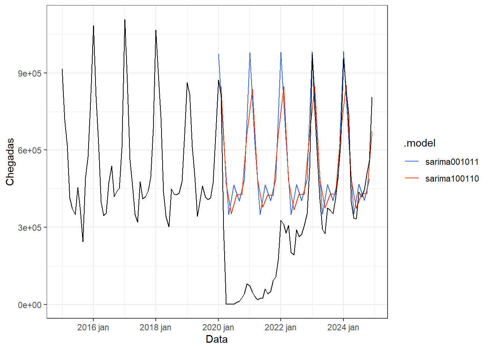

6 Modelos auto-regressivos integrados de médias móveis (ARIMA)
6.1 Estacionariedade em séries temporais
As séries temporais estacionárias são aquelas que não apresentam tendência ou sazonalidade, de forma que suas propriedades estatísticas permaneçam constantes ao longo do tempo. Séries estacionárias variam com média e variância constantes. Apesar de muitas séries temporais não serem estacionárias, não é difícil torná-las estacionárias. Um ruído branco, \(\varepsilon_t\), é um exemplo de série estacionária, apresentando as seguintes propriedades (Harvey 1990):
\[ \begin{align} E(\varepsilon_t)& = 0, \text{ } t=1,\dots,T \\ E(\varepsilon_t^2)&= Var(\varepsilon_t) = \sigma^2, \text{ } t=1,\dots,T \\ E(\varepsilon_t\varepsilon_s)& = 0, \text{ } t \neq s, \text{ } t=1,\dots,T. \\ \end{align} \]
Algumas séries cíclicas podem ser estacionárias, caso os picos e vales não sejam previsíveis devido a variabilidade na dimensão do ciclo.
A Figura 6.1 expõe exemplos de séries temporais estacionárias. À esquerda observa-se um ruído branco e à direita a série de variação na ação PETR3 para pouco mais de 10 meses de 2024.
6.1.1 Diferenciação
A diferenciação é útil para tornar uma série não estacionária em estacionária. Apesar de muitas séries observadas na indústria, na economia e em negócios apresentarem mudança nas suas propriedades, o comportamento da variação da série, isto é, o comportamento da série diferenciada é geralmente estacionário (Box et al. 2008). Logo, a diferenciação serve para remover a variação no nível de uma série, estabilizando sua média.
A diferenciação consiste na variação entre observações subsequentes. Ou seja, considerando uma série com \(T\) observações, a série diferenciada contém ao final \(T-1\) observações. A série diferenciada é denotada \(y_t'\), sendo obtida conforme a Equação 6.1.
\[ y_t' = y_t-y_{t-1} \tag{6.1}\]
A Tabela 6.1 expõe as primeiras observações na série do índice Ibovespa e variação deste. Observa-se para estas primeiras observações variações positivas, ou seja, alta em relação ao período anterior, para a maioria dos dias, mas também variações negativas, ou seja, queda em relação ao período anterior.
| Fechamento | Variação |
|---|---|
| 131,59 | NA |
| 132,16 | 0,57 |
| 130,57 | -1,59 |
| 131,06 | 0,50 |
| 133,12 | 2,06 |
| 133,75 | 0,62 |
| 134,96 | 1,21 |
| 135,12 | 0,16 |
| 134,88 | -0,24 |
| 134,03 | -0,85 |
Se a série diferenciada consiste em um ruído branco, \(\varepsilon_t\), então pode-se escrever:
\[ y_t-y_{t-1} = \varepsilon_t \]
Um modelo onde a observação posterior é igual à anterior adicionada de um ruído branco, \(y_t = y_{t-1}+\varepsilon_t\), é chamado de caminhada aleatória (random walk). O modelo de caminhada aleatória estima a próxima observação igual à anterior, \(\hat y_t = y_{t-1}\), conforme o método ingênuo. No caso de média não nula, como a maior parte das séries, pode-se adicionar uma constante, conforme segue, onde \(c\) é estimada pela média das diferenças.
\[ y_t-y_{t-1} = \varepsilon_t + c \]
A Figura 6.2 expõe a série não estacionária do índice Ibovespa, além da série obtida a partir da diferenciação desta que, obviamente, consiste na variação diária do índice. A série diferenciada apresenta estacionariedade. A Figura exibe também os correlogramas da série do índice e da variação deste. Observa-se que a série diferenciada, ao contrário da original, não apresenta autocorrelação.

O modelo de caminhada aleatória é muito útil para séries econométricas e de finanças. Geralmente tais séries apresentam longos períodos de tendência de queda ou crescimento, com mudanças inesperadas de difícil explicação.
Em casos onde a diferenciação de primeira ordem não garante a estacionariedade, pode-se ainda aplicar uma diferenciação de segunda ordem, conforme expresso na Equação 6.2.
\[ \begin{align} y_t'' &= y_t'-y_{t-1}' \\ &= (y_t-y_{t-1})-(y_{t-1}-y_{t-2}) \\ &= y_t-2y_{t-1}+y_{t-2} \end{align} \tag{6.2}\]
Em séries sazonais é importante aplicar a diferenciação sazonal, conforme exposto na Equação 6.3, onde \(m\) é o número de períodos sazonais.
\[ y_t'= y_t - y_{t-m} \tag{6.3}\]
A Figura 6.3 apresenta a série de passageiros em vôos do Brasil. Foi aplicado logaritmo para estabilizar a variação anual. Posteriormente, foi realizada diferenciação sazonal, \(m=12\). Em seguida, realizou-se a diferenciação simples, de forma a garantir a estacionariedade. Pode-se observar que a diferenciação anual elimina a sazonalidade e a mensal a tendência.
Tomando a diferenciação de primeira ordem como sendo sazonal, \(y' = y_t-y_{t-m}\), então a diferenciação de segunda ordem pode ser expressa conforme a Equação 6.4.
\[ \begin{align} y'' &= y'-y'_{t-1} \\ &= (y_t-y_{t-m})-(y_{t-1}-y_{t-m-1}) \\ &= y_t - y_{t-m} -y_{t-1}+y_{t-m-1} \\ \end{align} \tag{6.4}\]
6.1.2 Testes de raízes unitárias
Um modelo autoregressivo de primeira ordem, \(y_t = \phi y_{t-1}+\varepsilon_t\), consiste em um modelo estacionário se \(|\phi|<1\). Se \(\phi=1\), tem-se um modelo de caminhada aleatória, a série tem raiz unitária e é, consequentemente, não estacionária (Box et al. 2008). Logo, os testes de raízes unitárias tem o objetivo de avaliar se a série apresenta ou não estacionariedade.
O teste de Kwiatkowski-Phillips-Schmidt-Shin (KPSS) (Kwiatkowski et al. 1992) é uma opção, com a hipótese nula indicando a estacionariedade da série. A Tabela 6.2 apresenta o resultado do teste para a série do índice Ibovespa, indicando a rejeição da hipótese nula de estacionariedade, sendo necessária a diferenciação da série. A Tabela 6.3 apresenta o resultado do teste para a série do índice diferenciada. Observa-se neste caso que o resultado sugere que a hipótese nula de estacionariedade da série não deve ser rejeitada.
| Estatística | pvalor |
|---|---|
| 0,7490546 | 0,01 |
| Estatística | pvalor |
|---|---|
| 0,1841354 | 0,1 |
6.1.3 Operador de defasagem
O operador ou notação de defasagem (backward shift notation - \(B\)) é útil para trabalhar com diferenciação (Box et al. 2008), defasagem (lag) e para representação de modelos ARIMA. O operador \(B\) em \(y_t\) defasa a observação em um período no tempo, conforme Equação 6.5.
\[ By_t = y_{t-1} \tag{6.5}\]
No caso de defasagem de segunda ordem, tem-se:
\[ B(By_t) = B^2y_t = By_{t-1} = y_{t-2} \]
Logo, de forma geral, \(B^ky_t = y_{t-k}\). Para casos sazonais pode-se usar a diferenciação sazonal. Por exemplo, em séries de frquência horária e sazonalidade diária, pode ser útil usar \(B^{24}y_t = y_{t-24}\), de forma a retornar na mesma hora no dia anterior.
A diferenciação de primeira ordem com a notação de defasagem pode ser escrita segundo a Equação 6.6.
\[ \begin{align} y'_t &= y_t-y_{t-1} \\ &=y_t-By_t \\ &=(1-B)y_t \end{align} \tag{6.6}\]
De forma análoga, a diferenciação de segunda ordem fica segundo a Equação 6.7.
\[ \begin{align} y_t'' &= y_t-2y_{t-1}+y_{t-2} \\ &= y_t-2By_t+B^2y_t \\ &= (1-B)^2y_t \end{align} \tag{6.7}\]
6.2 Modelos autorregressivos
Um modelo autorregressivo consiste em um modelo de regressão para a série, \(y_t\), em função do seu passado, isto é, em função de termos defasados da série, \(y_{t-1}, y_{t-2}, ..., y_{t-p}\). Um modelo autorregressivo de ordem \(p\) ou \(AR(p)\) pode ser escrito segundo a Equação 6.8.
\[ \begin{align} y_t &= c+\phi_1y_{t-1} + \phi_2y_{t-2} + \ldots + \phi_py_{t-p} + \varepsilon_t \\ &= c+\phi_1By_t + \phi_2B^2y_t + \ldots + \phi_pB^py_t + \varepsilon_t \\ \end{align} \tag{6.8}\]
Um modelo autoregressivo de primeira ordem é denotado \(y_t = c+ \phi_1 y_{t-1} + \varepsilon_t\). Em uma série estacionária tem-se \(E(y_t) = E(y_{t-1}) = \mu_y\). Subtraindo-se a média tanto na série quanto no termo defasado, pode-se eliminar a constante:
\[ \begin{align} y_t - \mu_y=& \phi_1(y_{t-1}-\mu_y) + \varepsilon_t \\ y_t =& \phi_1y_{t-1}+ \mu_y -\phi_1\mu_y + \varepsilon_t \\ y_t =& \phi_1y_{t-1}+ \mu_y(1 -\phi_1) + \varepsilon_t \\ \end{align} \]
Logo, \(c=\mu_y(1 -\phi_1)\) para um modelo \(AR(1)\) e, generalizando, \(c = \mu_y(1-\phi_1-\phi_2-...-\phi_p) = \mu_y(1-\sum_i^p \phi_i)\) para um modelo \(AR(p)\) (Makridakis, Wheelwright, e Hyndman 2008; Hamilton 1994). Para \(\mu_y=0\), pode-se usar a representação com notação de defasagem da Equação 6.9. Pode-se observar que tal modelo é um modelo de regressão que ao invés de considerar outras variáveis independentes, considera valores anteriores da prória série, sendo, portanto, um modelo autoregressivo. Tal modelo não deve, entretanto, ser tratado como um modelo de regressão obtido por mínimos quadrados. Primeiro, porque a independência dos erros pode ser violada, dado o usual relacionamento entre os termos do lado direito. Segundo, pois a determinação da maior defasagem, \(p\), no modelo não é simples (Makridakis, Wheelwright, e Hyndman 2008).
\[ (1-\phi_1B- \phi_2B^2 - \ldots - \phi_pB^p)y_t = \varepsilon_t \\ \tag{6.9}\]
A Figura 6.4 expõe séries temporais que seguem processos autorregressivos \(AR(1)\) e \(AR(2)\). Na Figura 6.4(a) tem-se um processo autorregressivo de primeira ordem, \(AR(1)\), com \(y_t=0,6y_{t-1}+\varepsilon_t\). Na Figura 6.4(b) tem-se um processo autorregressivo de segunda ordem, \(AR(2)\), com \(y_t = 8-0,5y_{t-1}+0,3y_{t-2}+\varepsilon_t\).
Os processos autorregressivos são muito flexíveis. A mudança dos parâmetros \(\phi_1,..., \phi_p\) pode resultar em padrões de séries temporais muito distintos (R. Hyndman e Athanasopoulos 2021).
Para um modelo \(AR(1)\), \(y_t=c+\phi_1y_{t-1} + \varepsilon_t\):
- Se \(c=0\) e \(\phi_1=0\), tem-se um ruído branco.
- Se \(c=0\) e \(\phi_1=1\), tem-se uma caminhada aleatória.
- Se \(c\neq0\) e \(\phi_1=1\), tem-se uma caminhada aleatória com deriva.
- Se \(\phi_1<0\), \(y_t\) tende a oscilar em torno da média.
Os processos autorregressivos são úteis para modelar séries estacionárias, devendo satisfazer algumas restrições (R. Hyndman e Athanasopoulos 2021; Cryer e Chan 2008; Harvey 1990):
- Para um modelo \(AR(1)\): \(|\phi_1|1\).
- Para um modelo \(AR(2)\): \(|\phi_2|<1\), \(\phi_1+\phi_2<1\), \(\phi_2-\phi_1<1\).
Para um processo autoregressivo AR(1) a autocorrelação decai exponencialmente com o aumento da defasagem (Harvey 1990). Seja um modelo AR(1) com média nula. Recordando que a autocorrelação para defasagem de \(k\) observações neste caso consiste em \(\rho_k=E(y_ty_{t-k})\), tem-se:
\[ \begin{align} E(y_ty_{t-k}) & = \phi E(y_{t-1}y_{t-k}) + E(\varepsilon_t y_{t-k}) \\ \rho_k &= \phi \rho_{k-1} \end{align} \]
Logo, se \(|\phi| <1\), então a autocorrelação de um modelo AR(1) decai exponencialmente em magnitude. Se \(0<\phi<1\), tem-se autocorrelações positivas e se \(-1<\phi<0\), as autocorrelações se alternam em sinal com a primeira negativa e com magnitude diminuindo exponencialmente (Cryer e Chan 2008). A Figura 6.5 exibe correlogramas de processos AR(1), com \(\phi=0,9\) e \(\phi=-0,7\), confirmando tais afirmações.
6.2.1 Previsão para modelos autoregressivos
A previsão para um modelo \(AR(1)\) pode ser realizada de forma simples. Seja o modelo \(y_t = c + \phi y_{t-1} + \varepsilon_t\). A previsão para um período à frente das observações disponíveis, \(\hat y_{T+1}\), pode ser obtida segundo Equação 6.10.
\[ \hat y_{T+1} = c + \phi y_{T} \tag{6.10}\]
De forma análoga, para dois períodos à frente, a previsão fica:
\[ \begin{align} \hat y_{T+2} =& c + \phi y_{T+1} \\ \hat y_{T+2} =& c + \phi (c + \phi y_{T}) \\ \hat y_{T+2} =& c + \phi c + \phi^2 y_{T} \\ \hat y_{T+2} =& c(1 + \phi) + \phi^2 y_{T} \\ \end{align} \]
Seguindo este raciocício recursivo, pode-se obter a previsão para \(h\) períodos à frente para um modelo \(AR(1)\) conforme Equação 6.11.
\[ \hat y_{T+h} = c(1 + \phi + \phi^2 + \dots+\phi^{h-1}) + \phi^h y_{T} \tag{6.11}\]
Fazendo:
\[S_h = 1 + \phi + \phi^2 + \dots+\phi^{h-1},\]
logo,
\[\phi S_h = \phi + \phi^2 + \dots+\phi^{h}.\]
Portanto,
\[ \begin{align} S_h - \phi S_h =& 1-\phi^h \\ S_h(1-\phi) =& 1-\phi^h \\ S_h =& \frac{1-\phi^h}{1-\phi}, \text{} |\phi|<1. \end{align} \]
Consequentemente, a previsão para um modelo \(AR(1)\) também pode ser escrita segundo a Equação 6.12, pois, conforme já visto, \(c=\mu(1-\phi)\).
\[ \begin{align} \hat y_{T+h} =& c\frac{1-\phi^h}{1-\phi} + \phi^h y_{T} \\ \hat y_{T+h} =& \mu_y + \phi^h (y_{T}-\mu_y) \end{align} \tag{6.12}\]
Já para modelos de média móvel de ordem genérica, \(AR(p)\), não há uma fórmula tão simples, usa-se simplesmente o processo recursivo de previsão. Portanto, para \(h=1\), a previsão fica segundo a Equação 6.13.
\[ \hat y_{T+1} = c+\phi_1y_{T} + \phi_2y_{T-1} + \ldots + \phi_py_{T+1-p} \tag{6.13}\]
Para \(h\) períodos à frente, a previsão para um modelo \(AR(p)\) é obtida a partir da Equação 6.14.
\[ \hat y_{T+h} = c+\phi_1y_{T+h-1} + \phi_2y_{T+h-2} + \ldots + \phi_py_{T+h-p} \tag{6.14}\]
6.3 Modelos de média móvel
Um modelo de média móvel considera os erros passados ao invés das observações passadas, sendo um modelo de média móvel de ordem \(q\), \(MA(q)\) definido conforme Equação 6.15. Como os valores do erro não são observáveis, este modelo também não é uma regressão habitual (R. Hyndman e Athanasopoulos 2021).
\[ \begin{align} y_t&=c+\varepsilon_t+\theta_1\varepsilon_{t-1} + \theta_2\varepsilon_{t-2} + \ldots + \theta_q\varepsilon_{t-q}\\ &=c+\varepsilon_t+\theta_1B\varepsilon_t+\theta_2B^2\varepsilon_t+\ldots+\theta_qB^q\varepsilon_t \\ &=c+ (1+\theta_1B+\theta_2B^2+\ldots+\theta_qB^q)\varepsilon_t \end{align} \tag{6.15}\]
É importante também distinguir os modelos \(MA(q)\) dos modelos de média móvel para estimativa da tendência na decomposição clássica. Enquanto os modelos aqui apresentados tem o objetivo de realizar previsões, aqueles visam suavizar a séries temporal, eliminando sua sazonalidade.
A Figura 6.6 ilustra processos de média móvel. Na Figura 6.6(a) um processo de média móvel de primeira ordem, \(MA(1)\), é observado com \(y_t = 15 + \varepsilon_t + 0.6\varepsilon_{t-1}\). Na Figura 6.6(b) tem-se um processo de média móvel de segunda ordem, \(MA(2)\), com \(y_t = 8 + \varepsilon_t - 0.9\varepsilon_{t-1} + 0.5\varepsilon_{t-2}\). Mudando os parâmetros \(\theta_1, ..., \theta_q\) a série varia significativamente. Assim como nos modelos autorregressivos, nos de média móvel a variância do erro \(\sigma_\varepsilon\) só muda a amplitude da série, não o padrão.

Qualquer processo estacionário \(AR(p)\) pode ser escrito como um processo \(MA(\infty)\). Para o caso \(AR(1)\), tem-se:
\[ \begin{align} y_t &= \phi_1y_{t-1} + \varepsilon_t\\ &= \phi_1(\phi_1y_{t-2} + \varepsilon_{t-1}) + \varepsilon_t\\ &= \phi_1^2y_{t-2} + \phi_1\varepsilon_{t-1} + \varepsilon_t\\ &= \phi_1^3y_{t-3} + \phi_1^2\varepsilon_{t-2} + \phi_1\varepsilon_{t-1} + \varepsilon_t\\ &= ...\\ \end{align} \]
À medida que \(k\) aumenta, \(\phi_1^k\) diminui, considerando \(-1<\phi_1<1\), de forma que o termo de potência maior pode ser desconsiderado. Fazendo \(\phi_1 = \theta_1\), \(\phi_1^2 = \theta_2\) e assim sucessivamente, tem-se o modelo de média móvel inicialmente exposto. De forma análoga, impondo algumas restrições nos parâmetros do modelo \(MA(q)\) é possível escrevê-lo como um processo \(AR(\infty)\).
Qualquer processo \(MA(q)\) é estacionário. Para um processo MA(1), as condições de estacionariedade são satisfeitas conforme segue (Harvey 1990):
\[ \begin{align} E(y_t) & = E(\varepsilon_t) + \theta E(\varepsilon_{t-1}) = 0 \\ E(y_t^2) & = E(\varepsilon_t^2) + 2\theta E(\varepsilon_t\varepsilon_{t-1}) + \theta^2 E(\varepsilon_{t-1}^2)= \sigma^2(1+\theta^2) \\ E(y_ty_{t-1}) &= E[(\varepsilon_t + \theta \varepsilon_{t-1})(\varepsilon_{t-1} + \theta \varepsilon_{t-2})] = \theta \sigma^2 \\ E(y_ty_{t-k}) &= E[(\varepsilon_t + \theta \varepsilon_{t-1})(\varepsilon_{t-k} + \theta \varepsilon_{t-k-1})] = 0, \text{ } k =2,3,... \\ \end{align} \]
A partir de tais condições não é difícil entender que um processo MA(1) apresenta uma queda acentuada na autocorrelação após a defasagem de uma observação, assim como um processo MA(2) apresentará queda na autocorrelação após a defasagem de duas observações. A Figura 6.7 expõe correlogramas de tais processos.
Para processos MA(q), de forma análoga a um processo MA(1), não é difícil comprovar as condições de estacionariedade (Harvey 1990).
6.3.1 Previsão para modelos de média móvel
Considerando inicialmente um modelo de média móvel \(MA(1)\), \(y_t = c + \varepsilon_t + \theta_1\varepsilon_{t-1}\), seja a previsão um período à frente, \(h=1\), obtida segundo a Equação 6.16, pois \(\varepsilon_{T+1},\dots,\varepsilon_{T+h}\) são desconhecidos e tem esperança nula. A constante \(c\) pode ser estimada segundo a média da série, \(c=\mu_y\).
\[ \begin{align} \hat y_{T+1} &= c + \varepsilon_{T+1} + \theta_1\varepsilon_{T} \\ \hat y_{T+1} &= c + \theta_1\varepsilon_{T} \end{align} \tag{6.16}\]
Já para \(h \ge 2\) a previsão consiste apenas na constante, conforme Equação 6.17.
\[ \begin{align} \hat y_{T+1} &= c + \varepsilon_{T+2} + \theta_1\varepsilon_{T+1} \\ \hat y_{T+1} &= c \end{align} \tag{6.17}\]
Para um modelo de média-móvel de ordem \(q\), \(MA(q)\) a previsão para um período à frente pode ser obtida segundo a Equação 6.18.
\[ \begin{align} \hat y_{T+1}&=c+\varepsilon_{T+1}+\theta_1\varepsilon_{T} + \theta_2\varepsilon_{T-1} + \ldots + \theta_q\varepsilon_{T+1-q} \\ \hat y_{T+1}&=c+\theta_1\varepsilon_{T} + \theta_2\varepsilon_{T-1} + \ldots + \theta_q\varepsilon_{T+1-q} \end{align} \tag{6.18}\]
A previsão sempre conterá termos de erros observados, portanto, se \(h>q\), ou seja, se o período de previsão for maior que a ordem do modelo, todos os termos de erro serão desconhecidos e a previsão será igual à constante, conforme Equação 6.19.
\[ \hat y_{T+h}=c \tag{6.19}\]
6.4 Modelos ARIMA não sazonais
Um modelo autorregressivo integrado de média móvel (ARIMA) combina um modelo autorregressivo da série diferenciada e um de média móvel. Para diferenciação de primeira ordem o modelo é expresso segundo a Equação 6.20.
\[ \begin{align} y_t'&=c+\phi_1y'_{t-1} + \phi_2y'_{t-2} + \ldots + \phi_py'_{t-p} + \theta_1\varepsilon_{t-1} + \theta_2\varepsilon_{t-2} + \ldots + \theta_q\varepsilon_{t-q} + \varepsilon_t \\ &= c+\phi_1By'_t + \phi_2B^2y'_t + \ldots + \phi_pB^py'_t+\theta_1B\varepsilon_t + \theta_2B^2\varepsilon_t + \ldots + \theta_qB^q\varepsilon_t + \varepsilon_t \\ \end{align} \tag{6.20}\]
Logo, considerando ordem de diferenciação \(d\), pode-se representar um modelo \(ARIMA(p,d,q)\) usando a Equação 6.21.
\[ (1-\phi_1B- \ldots - \phi_pB^p)(1-B)^dy_t = c+( 1+\theta_1B+\ldots+\theta_qB^q)\varepsilon_t. \tag{6.21}\]
Quando não é necessária a diferenciação da série, isto é, \(d=0\), tem-se um modelo \(ARMA(p,d)\) (Box et al. 2008). A Tabela 6.4 expõe a sintaxe do modelo ARIMA correspondente para alguns casos especiais já conhecidos.
| Caso especial | Modelo |
|---|---|
| Ruído branco | \(ARIMA(0,0,0)\) sem cte |
| Caminhada aleatória | \(ARIMA(0,1,0)\) sem cte |
| Caminhada aleatória com deriva | \(ARIMA(0,1,0)\) com cte |
| Autorregressão | \(ARIMA(p,0,0)\) |
| Média móvel | \(ARIMA(0,0,q)\) |
A Figura 6.8 expõe a série temporal do volume de produção de coque no Brasil a partir de 2021.

É difícil selecionar apropriadamente os valores adequados de \(p,d,q\) ao se estimar um modelo ARIMA para uma série de interesse. O pacote fable auxilia na otimização destes parâmetros segundo a série em análise. A seguir expõe-se o resultado do modelo ARIMA obtido automaticamente.
Series: value
Model: ARIMA(1,0,0) w/ mean
Coefficients:
ar1 constant
0,2763 271035,558
s.e. 0,1433 4547,139
sigma^2 estimated as 969282769: log likelihood=-516,68
AIC=1039,35 AICc=1039,95 BIC=1044,7Foi obtido um modelo ARIMA(1,0,0) exposto a seguir, onde \(\varepsilon_t\) é ruído branco com \(\sigma_\varepsilon = 31133,31\).
\[ y_t = 271035,56 + 0,28y_{t-1} + \varepsilon_t \]
A Figura 6.9 expõe a previsão de 10 meses à frente usando tal modelo.
A Figura 6.10 expõe a série temporal do valor da ação VALE3 a partir de 2020.

Abaixo expõe-se o modelo ARIMA obtido para a série.
Series: Valor
Model: ARIMA(2,0,2) w/ mean
Coefficients:
ar1 ar2 ma1 ma2 constant
1,4603 -0,7901 -0,6441 0,4800 23,9391
s.e. 0,1549 0,1356 0,2359 0,1225 0,5966
sigma^2 estimated as 25,64: log likelihood=-135,27
AIC=282,53 AICc=284,74 BIC=293,37Foi obtido um modelo \(ARIMA(2,0,2)\):
\[ y_t = 23,94 + 1,46y_{t-1} - 0,79y_{t-2} -0,64\varepsilon_{t-1} + 0,48\varepsilon_{t-2} + \varepsilon_t \]
A Figura 6.11 expõe os gráficos dos resíduos do modelo ARIMA(2,0,2) aplicado à série do preço da ação VALE3. Observa-se um padrão de ruído branco, com ausência de autocorrelação.
Conforme Figura 6.12, dada a previsão 10 meses à frente exibida, o modelo capturou bem o padrão cíclico não sazonal da série.

6.4.1 Previsão com modelos ARIMA não sazonais
A previsão em modelos ARIMA é realizada usando o modelo ARIMA obtido, considerando o número de períodos à frente de interesse, \(h\), à frente das observações disponíveis, \(T+h\). Para um modelo ARIMA com \(d=1\), considerando um período à frente, \(h=1\), a previsão é realizada segundo a Equação 6.22, onde o termo de erro para \(t=T+1\) é desconhecido e tem esperança nula, \(E[\varepsilon_{T+1}]=0\). Para períodos de previsão maiores, \(h\ge2\), faz-se recursivamente a previsão, de forma similar ao demonstrado para os modelos autoregressivos e os de média móvel, lembrando que este último apresentará todos termos de erro nulos sempre que \(h\geq q\), uma vez que são desconhecidos.
\[ \begin{align} y_{T+1}'&=c+\phi_1y'_{T} + \phi_2y'_{T-1} + \ldots + \phi_py'_{T+1-p} + \theta_1\varepsilon_{T} + \theta_2\varepsilon_{T-1} + \ldots + \theta_q\varepsilon_{T+1-q} + \varepsilon_{T+1} \\ \hat y_{T+1}'&=c+\phi_1y'_{T} + \phi_2y'_{T-1} + \ldots + \phi_py'_{T+1-p} + \theta_1\varepsilon_{T} + \theta_2\varepsilon_{T-1} + \ldots + \theta_q\varepsilon_{T+1-q} \\ \hat y_{T+1} - y_{T} &= c + \phi_1(y_T-y_{T-1}) + \phi_2(y_{T-1}-y_{T-2}) + \dots + \theta_1\varepsilon_{T} + \theta_2\varepsilon_{T-1} + \ldots + \theta_q\varepsilon_{T+1-q} \\ \hat y_{T+1} &= c + y_{T} + \phi_1y_T-\phi_1y_{T-1} + \phi_2y_{T-1}-\phi_2y_{T-2} + \dots + \theta_1\varepsilon_{T} + \theta_2\varepsilon_{T-1} + \ldots + \theta_q\varepsilon_{T+1-q} \\ \hat y_{T+1} &= c + y_{T}(1 + \phi_1)+y_{T-1}(\phi_2-\phi_1) + \dots + \theta_1\varepsilon_{T} + \theta_2\varepsilon_{T-1} + \ldots + \theta_q\varepsilon_{T+1-q} \\ \end{align} \tag{6.22}\]
Em um modelo ARIMA se \(c=0\) e \(d=0\), então a previsão de longo prazo tenderá para zero. Se \(c=0\) e \(d=1\), a previsão a longo prazo tenderá para uma constante. Se \(c=0\) e \(d=2\), a previsão a longo prazo será linear. Se \(c\neq0\) e \(d=0\), a previsão a longo prazo será a média das observações. Se \(c\neq0\) e \(d=1\) a previsão a longo prazo será linear. Para previsões cíclicas é importante \(p\geq2\) (R. Hyndman e Athanasopoulos 2021).
6.5 Autocorrelação parcial
A autocorrelação \(r_k\) mede a relação linear entre a série original \(y_t\) e a série defasada \(y_{t-k}\). Entretanto, se \(y_t\) e \(y_{t-1}\) são correlacionadas, então \(y_{t-1}\) e \(y_{t-2}\) também serão. Logo, haverá correlação entre \(y_t\) e \(y_{t-2}\). Porém, não porque necessariamente há uma explicação plausível para \(y_t\) a partir de \(y_{t-2}\), mas simplesmente porque ambas estão relacionadas indiretamente por \(y_{t-1}\).
A autocorrelação parcial visa corrigir este viés da autocorrelação, medindo mais diretamente a relação linear entre \(y_t\) e \(y_{t-k}\) desconsiderando os efeitos das defasagens anteriores, \(1,2,\ldots, k-1\).
A Figura 6.13 expõe os correlogramas de autocorrelação (ACF) e de autocorrelação parcial (PACF) da série do preço da ação VALE3. Observa-se um padrão sinusoidal em ambos correlogramas e a última autocorrelação parcial significativa com \(k=3\).

Os correlogramas de ACF e PACF podem auxiliar na definição da ordem do modelo ARIMA em casos \(ARIMA(0,d,q)\) e \(ARIMA(p,d,0)\). Para séries que seguem um padrão \(ARIMA(0,d,q)\):
- A autocorrelação parcial (PACF) decai exponencialmente ou tem padrão senoidal;
- Há significância na autocorrelação (ACF) de lag \(q\), mas não além deste.
Para séries que seguem um padrão \(ARIMA(p,d,0)\):
- A autocorrelação (ACF) decai exponencialmente ou tem padrão senoidal;
- Há significância na autocorrelação parcial (PACF) de lag \(p\), mas não além deste.
A seguir apresenta-se o resultado do modelo ARIMA(3,0,0) para a série da ação VALE3 indicado pela interpretação dos correlogramas da Figura 6.13. O modelo obtido apresentou resultado para \(AICc\) muito próximo ao obtido pela estimativa automática apresentado anteriormente.
Series: Valor
Model: ARIMA(3,0,0) w/ mean
Coefficients:
ar1 ar2 ar3 constant
0,8779 0,1577 -0,4693 31,4916
s.e. 0,1268 0,1812 0,1290 0,7465
sigma^2 estimated as 26,71: log likelihood=-136,62
AIC=283,25 AICc=284,78 BIC=292,286.5.1 Modelagem e seleção de modelos
Os modelos ARIMA podem ser estimados de distintas formas. Para um modelo de ordem \(p,d,q\) pode-se maximizar o log da máxima verossimilhança para estimar os parâmetros \(c\), \(\phi_1,\ldots,\phi_p\) e \(\theta_1,\ldots,\theta_q\), conforme realizado no pacote fable. É importante esclarecer que existem distintos algoritmos e, neste sentido, linguagens e pacotes computacionais diferentes podem não reportar os mesmos resultados.
Para comparar e selecionar modelos pode-se considerar o critério de informação de Akaike (\(AIC\)), calculado conforme segue, onde \(k=0\), se \(c=0\), e \(k=1\), caso contrário.
\[ AIC = -2\text{log}(L) + 2(p+k+q+1) \]
O AIC corrigido (\(AICc\)) é calculado conforme segue.
\[ AIC_c = AIC+ \frac{2(p+k+q+1)(p+k+q+2)}{T-p-q-k-2} \]
Outra métrica é o critério de informação Bayesiano (BIC):
\[ BIC = AIC + [\text{log}(T)-2](p+k+q+1) \]
O modelo que minimizar tais métricas deve ser escolhido, sugerindo-se priorizar o \(AICc\). Uma abordagem para seleção de modelos ARIMA para casos não sazonais pode seguir os seguintes passos (R. Hyndman e Athanasopoulos 2021):
- Visualize a série e identifique observações não usuais;
- Realize transformação de Box-Cox para estabilizar a variância, se necessário;
- Para séries não estacionárias, sugere-se diferenciar a série até tornar os dados estacionários;
- Examine a autocorrelação e tente identificar algum modelo \(ARIMA(p,d,0)\) via PACF ou \(ARIMA(0,d,q)\) via ACF;
- Selecione o modelo a partir do \(AICc\);
- Avalie os resíduos do modelo selecionado;
- Realize previsões com o modelo.
Em caso de autocorrelação nos resíduos, tente ajustar outro modelo. Para exemplificar o procedimento, considere a série de produção de grãos no Brasil em toneladas, apresentada no capítulo 4, na Figura 7.6. Como a série aparenta apresentar leve heterocedasticidade, será realizada transformação de Box-Cox.
A Figura 6.14 apresenta a série após transformação com \(\lambda=0,6264\).
A Tabela 6.5 apresenta o resultado do teste de KPSS para a série transformada, indicando a rejeição da hipótese nula de estacionariedade desta.
| Estatística | pvalor |
|---|---|
| 1,242214 | 0,01 |
A Figura 6.15 apresenta a variação da série transformada. Mesmo com a transformação de Box-Cox, após 2015 houve períodos de variação mais alta. Confirma-se estacionariedade após diferenciação de primeira ordem da série transformada, conforme Tabela 6.6.

| Estatística | pvalor |
|---|---|
| 0,5364439 | 0,0334586 |
A Figura 6.16 expõe os correlogramas de ACF e PACF para a série diferenciada e transformada. Observa-se que o primeiro indica um modelo \(ARIMA(0,1,1)\), enquanto o segundo indica um modelo \(ARIMA(1,1,0)\).

A seguir expõe-se o resultado do modelo \(ARIMA(1,1,0)\). Foi obtido \(ACCc\) = 585,42.
Series: valor
Model: ARIMA(1,1,0) w/ drift
Transformation: box_cox(valor, lambda)
Coefficients:
ar1 constant
-0,4639 41,2969
s.e. 0,1369 8,4272
sigma^2 estimated as 3430: log likelihood=-257,09
AIC=520,17 AICc=520,73 BIC=525,72A seguir expõe-se o resultado do modelo \(ARIMA(0,1,1)\). Foi obtido \(ACCc\) = 586,36, indicando que o modelo anterior apresentou melhor ajuste.
Series: valor
Model: ARIMA(0,1,1) w/ drift
Transformation: box_cox(valor, lambda)
Coefficients:
ma1 constant
-0,4384 28,0583
s.e. 0,1109 4,7877
sigma^2 estimated as 3446: log likelihood=-257,18
AIC=520,36 AICc=520,92 BIC=525,91A Figura 6.17 expõe os gráficos de resíduos para o modelo \(ARIMA(1,1,0)\) aplicado à série transformada de produção de grãos. Os resíduos são não correlacionados e não aparentam apresentar desvio significativo de normalidade.
A Tabela 6.7 resume o resultado do teste de Ljung-Box para os resíduos do modelo \(ARIMA(1,1,0)\) para a série de produção de grãos. O teste deve ser realizado considerando \(K=p+q\) graus de liberdade. O alto p-valor obtido indica não haver indícios para rejeição da hipótese nula de ausência de autocorrelação.
| Estatística | pvalor |
|---|---|
| 4,580951 | 0,8692027 |
A Figura 6.18 expõe a previsão realizada para \(h=10\) anos à frente com o modelo ajustado. A previsão pontual para 2033 é de 397000 toneladas de grãos.

6.6 SARIMA: ARIMA com sazonalidade
Modelos ARIMA também podem ser aplicados a casos sazonais, sendo denotados \(ARIMA(p,d,q)(P,D,Q)_m\), onde \(m\) é o período sazonal e os termos da parte sazonal do modelo são denotados por letras maiúsculas. Um modelo \(ARIMA(1,1,1)(1,1,1)_{12}\) para uma série de frequência mensal seria para sazonalidade anual e pode ser escrito em notação de defasagem conforme Equação 6.23, onde \(\Phi_1\) e \(\Theta_1\) são, respectivamente, os termos autorregressivo e de média móvel, para a parte sazonal. Os modelos ARIMA sazonais são comumente chamados de SARIMA.
\[ (1-\phi_1B)(1-\Phi_1B^{12})(1-B)(1-B^{12})y_t = c+( 1+\theta_1B)( 1+\Theta_1B^{12})\varepsilon_t \tag{6.23}\]
A Figura 6.19 expõe graficamente a série de chegada de turistas no Brasil, incluindo brasileiros que vivem no exterior e estrangeiros. A série tem frequência mensal e está disponível em Estimativas de Chegadas de Turistas Internacionais ao Brasil. Observa-se tendência de crescimento no volume de chegadas com variação sazonal anual com padrão não constante. A partir de 2020 observa-se queda brusca no volume de chegadas devido à pandemia de COVID-19.
A Figura 6.20 ilustra o gráfico sazonal da série de chegada de turistas no Brasil. Confirma-se a sazonalidade anual, com maior volume nas chegadas em dezembro e janeiro, além de volume maior em julho, em relação aos meses do outono e do inverno. Fica clara, também, a tendência de crescimento na duas últimas décadas, em relação aos anos 90 e início dos anos 2000. Destaca-se, também, o pico de chegadas em junho de 2014, devido à copa do mundo de futebol, além do aumento do volume de chegadas em agosto de 2016, devido às olimpíadas do Rio de Janeiro.
A Figura 6.21 expõe novamente a série de chegada de turistas do exterior no Brasil, considerando o período de 2015 a 2019. A Figura também apresenta a série transformada via logarítmo, com diferenciação sazonal e diferenciação dupla. Observa-se que, por neste período a série não apresentar tendência clara, a diferenciação sazonal já praticamente viabiliza a estacionariedade. A Tabela 6.8 expõe o resultado do teste de KPSS, o qual indica a não rejeição da hipótese nula de estacionariedade da variação no log série de chegada turistas no Brasil.

| Estatística | pvalor |
|---|---|
| 0,0591714 | 0,1 |
A Figura 6.22 expõe os correlogramas de ACF e PACF para a variação sazonal no log série de chegada turistas no Brasil. Observa-se no correlograma de ACF pico nas autocorrelações com defasagem de uma e de doze observações, sugerindo \(q=1\) e \(Q=1\). O correlograma de PACF apresenta padrão similar, sugerindo \(p=1\) e \(P=1\). Logo, serão testados os modelos \(ARIMA(1,0,0)(1,1,0)_{12}\) e \(ARIMA(0,0,1)(0,1,1)_{12}\), além do modelo ARIMA automático.
A Tabela 6.9 apresenta o resultado dos modelos ARIMA testados para o log série de chegada turistas no Brasil. Observa-se que o modelo automático apresentou os mesmos resultados que o modelo \(ARIMA(0,0,1)(0,1,1)_{12}\). A seguir expõe-se a saída do modelo automático, indicando que ele é exatamente igual ao supracitado. Logo, foi possível identificar via PACF a ordem da média móvel da parte simples e da sazonal do modelo SARIMA.
| Modelo | sigma2 | log_lik | AIC | AICc | BIC |
|---|---|---|---|---|---|
| sarima001011 | 0,0164671 | 29,06562 | -52,13123 | -51,58578 | -46,51763 |
| auto | 0,0164671 | 29,06562 | -52,13123 | -51,58578 | -46,51763 |
| sarima100110 | 0,0173195 | 28,71595 | -51,43190 | -50,88645 | -45,81830 |
Series: Chegadas
Model: ARIMA(0,0,1)(0,1,1)[12]
Transformation: log(Chegadas)
Coefficients:
ma1 sma1
0,2236 -0,5806
s.e. 0,1361 0,2472
sigma^2 estimated as 0,01647: log likelihood=29,07
AIC=-52,13 AICc=-51,59 BIC=-46,52A Figura 6.23 expõe os gráficos de resíduos, indicando autocorrelção isolada para o lag 3, além de histograma com um pouco de assimetria à esquerda, porém, não representando desvio grave de normalidade. A Tabela 6.10 expõe o resultado do teste de Ljung-Box, que sugere a não rejeição da hipótese nula de ausência de autocorrelação nos resíduos.
| Estatística | pvalor |
|---|---|
| 31,34185 | 0,0893296 |
A Figura 6.24 expõe o resultado da previsão dos modelos ARIMA considerados. Obviamente ambos os modelos não capturam a queda no volume de vôos nos anos da pandemia. Entretanto, as previsões apresentam boa proximidade com os resultados dos anos de 2023 e 2024. A Tabela 6.11 expõe o desempenho dos modelos para os anos de 2023 e 2024. Confirma-se que o modelo \(ARIMA(0,0,1)(0,1,1)_{12}\) apresentou melhor desempenho, com 10,3% de erro para estes anos.

| Modelo | RMSE | MAE | MAPE |
|---|---|---|---|
| sarima001011 | 55576,20 | 47824,28 | 10,29882 |
| sarima100110 | 74167,86 | 64851,82 | 14,18985 |
A Figura 6.25 expõe a variação sazonal da série de log(passageiros) em vôos do Brasil, além dos correlogramas de ACF e PACF. Pode-se observar que a série sazonalmente diferenciada ainda apresenta alta tendência. É ainda necessário uma diferenciação de primeira ordem.

A Figura 6.26 apresenta a série mais uma vez diferenciada. Examinando-se o correlograma de ACF, pode-se sugerir um modelo MA(1) para a parte não sazonal, dada a significância no lag 1, e um modelo MA(1) para a parte sazonal, dada a significância no lag 12. Logo, pode-se sugerir um modelo \(ARIMA(0,1,1)(0,1,1)_{12}\). Ao observar o correlograma de PACF, há indícios de que um modelo autorregressivo de ordem AR(1) seja adequado para a parte não sazonal, enquanto um modelo AR(3) pode ser interessante para a parte sazonal, devido aos picos de 12, 24 e 36 meses. Entretanto, ao se tentar estimar um modelo \(ARIMA(1,1,0)(3,1,0)_{12}\) não foram reportados resultados, sendo então aproximado um modelo \(ARIMA(1,1,0)(2,1,0)_{12}\).
Além dos modelos sugeridos, o método automático do pacote fable sugere um modelo de ordem \(ARIMA(1,1,1)(0,1,1)_{12}\), conforme Tabela 6.12, muito próximo dos considerados inicialmente.
| Modelo | Ordem |
|---|---|
| sarima011011 | <ARIMA(0,1,1)(0,1,1)[12]> |
| sarima110210 | <ARIMA(1,1,0)(2,1,0)[12]> |
| auto | <ARIMA(1,1,1)(0,1,1)[12]> |
A Tabela 6.13 resume o resultado dos três modelos. Considerando o AICc, o modelo automático apresentou por pouco o melhor resultado.
| Modelo | sigma2 | log_lik | AIC | AICc | BIC |
|---|---|---|---|---|---|
| auto | 0,0010447 | 455,1001 | -902,2002 | -902,0201 | -888,5004 |
| sarima011011 | 0,0010532 | 453,7601 | -901,5202 | -901,4126 | -891,2453 |
| sarima110210 | 0,0011762 | 444,0289 | -880,0578 | -879,8776 | -866,3580 |
A seguir são apresentados os coeficientes do modelo \(ARIMA(1,1,1)(0,1,1)_{12}\).
Series: Passageiros
Model: ARIMA(1,1,1)(0,1,1)[12]
Transformation: log(Passageiros)
Coefficients:
ar1 ma1 sma1
0,5214 -0,6437 -0,7410
s.e. 0,2121 0,1859 0,0584
sigma^2 estimated as 0,001045: log likelihood=455,1
AIC=-902,2 AICc=-902,02 BIC=-888,5A Figura 6.27 apresenta os gráficos de resíduos do modelo \(ARIMA(1,1,1)(0,1,1)_{12}\). A série residual apresenta padrão estacionário e não há indícios de desvio de normalidade pelo histograma. Há significância na autocorrelação para as defasagens de 11, 13 e 22 observações.

A Tabela 6.14 apresenta o resultado do teste de Ljung-Box para os resíduos do modelo \(ARIMA(1,1,1)(0,1,1)_{12}\) para a série log(passageiros). No caso sazonal, considera-se \(K=p+q+P+Q\) graus de liberdade no teste. Considerando um nível de significância de 0,05, não há indícios suficientes para rejeição da hipótese nula de ausência de autocorrelação residual.
| Estatística | pvalor |
|---|---|
| 28,77407 | 0,1195322 |
A Figura 6.28 apresenta a previsão para 3 anos à frente para a série de passageiros em vôos do Brasil. Sabe-se que a pandemia reduziu o volume de vôos para níveis menores que os dos anos 2000. Entretanto, o modelo capturou bem o padrão dos últimos anos e o padrão de sazonalidade no número de passageiros. Após alguns anos de observação pós-pandemia, modelos ARIMA seguirão sendo úteis para modelar a variação observada no volume de passageiros em vôos do Brasil.
A Figura 6.29 expõe a série de produtos não duráveis no Brasil. Observa-se padrão sazonal anual com tendência de crescimento até 2015 e depois de queda, com pior resultado em 2020, devido a pandemia. Após, 2021 observa-se tendência de recuperação.

A Figura 6.30 expõe a série de bens de consumo não duráveis duplamente diferenciada - simples e sazonal (\(m=12\)), considerando os dados de até dezembro de 2021. Pode-se sugerir pelo correlograma de PACF um modelo de ordem (2,1,0) para a parte não sazonal e um modelo de ordem (1,1,0) para a parte sazonal, dado o pico no atraso 12 meses. Já pelo correlograma de ACF, pode-se sugerir um modelo de ordem (0,1,1) para a parte não sazonal e um modelo de ordem (0,1,1) para a parte sazonal. Apesar de haverem outras autocorrelações siginificativas, estas não serão consideradas, uma vez que não são em sequência tanto para a tendência quanto para a sazonalidade.

A Tabela 6.15 expõe os modelos testados manualmente e o selecionado automaticamente.
| Modelo | Ordem |
|---|---|
| arima210110 | <ARIMA(2,1,0)(1,1,0)[12]> |
| arima011011 | <ARIMA(0,1,1)(0,1,1)[12]> |
| auto | <ARIMA(4,1,1)(0,1,1)[12]> |
A Tabela 6.16 apresenta os resultados para os modelos testados na série de bens de consumo não duráveis. O modelo \(ARIMA(4,1,1)(0,1,1)_{12}\), selecionado via pacote fable apresenta melhor ajuste. R. J. Hyndman e Khandakar (2008) descrevem a abordagem usada no pacote para seleção automática de modelos SARIMA sem e com sazonalidade e também para modelos ETS.
| .model | sigma2 | log_lik | AIC | AICc | BIC |
|---|---|---|---|---|---|
| auto | 14,09469 | -591,4166 | 1196,833 | 1197,374 | 1220,428 |
| arima011011 | 14,94719 | -599,7525 | 1205,505 | 1205,619 | 1215,617 |
| arima210110 | 16,92686 | -609,0919 | 1226,184 | 1226,374 | 1239,666 |
A Figura 6.31 apresenta os gráficos residuais para o modelo \(ARIMA(4,1,1)(0,1,1)_{12}\) para a série de bens de consumo não duráveis. O valor discrepante março de 2021 é atribuído à pandemia. Observa-se picos de autocorrelação parcial para defasagens próximas de 2 anos. No entanto, pelo teste de Ljung-Box, apresentado na Tabela 6.17, não há indícios suficientes que indicam a rejeição da hipótese de independência dos resíduos.
| Estatística | pvalor |
|---|---|
| 25,45438 | 0,1129033 |
A Figura 6.32 apresenta graficamente os resultados de previsão para além de 2021, juntamente com os dados disponíveis e separados para teste. Observa-se boa proximidade com os dados não considerados para treinamento do modelo. Apesar da queda em 2021 devido à pandemia, o modelo treinado conseguiu apresentar uma boa projeção à curto e médio prazo.
A Tabela 6.18 finaliza a análise comparando o desempenho dos modelos estimados aplicados aos dados de teste para a série de bens de consumo não duráveis. Confirma-se a superioridade do modelo estimado automaticamente.
| Modelo | RMSE | MAE | MAPE |
|---|---|---|---|
| arima011011 | 5,184891 | 4,167655 | 4,123478 |
| arima210110 | 7,123093 | 5,999505 | 5,991313 |
| auto | 5,714044 | 4,262668 | 4,127184 |
6.7 Implementações em R
A seguir são apresentadas boa parte das implementações na linguagem R para obter os dados, gráficos e análises expostos no presente capítulo.
Carregando pacotes.
library(ggplot2)
library(tsibble)
library(forecast)
library(fable)
library(fabletools)
library(feasts)
library(lubridate)
library(rbcb)
library(ipeadatar)
theme_set(theme_bw())Simulando uma série temporal de ruído branco. A função básica rnorm serve para gerar números aleatórios na distribuição normal.
set.seed(33)
white <- tsibble(date = as.Date("2024-01-01") + 0:199,
value = rnorm(200)+70)
white |>
autoplot(value) +
labs(x="",
y="",
title="Ruído branco")Diferenciação da série do índice Ibovespa. Usa-se o comando difference.
ibov <- read.csv("Ibovespa_ InfoMoney_2024.csv",
header=T)
ibov <- ibov |>
mutate(DATA = 1:nrow(ibov)) |>
select(DATA,FECHAMENTO) |>
as_tsibble(index = DATA)ibov |>
autoplot(difference(FECHAMENTO)) +
labs(y = "R$", x = "",
title="Variação Índice Ibovespa") A autocorrelação é obtida via função ACF, com o argumento lag_max para definir a diferenciação máxima. Usando a função autoplot em sequência, ao invés de se exibir as autocorrelações, plota-se o correlograma.
ibov |>
ACF(FECHAMENTO, lag_max = 30) |>
autoplot() +
labs(x = "",
title="Índice Ibovespa") Para obter o correlograma da série diferenciada procedendo conforme segue.
ibov |>
ACF(difference(FECHAMENTO), lag_max = 30) |>
autoplot() +
labs(x = "",
title="Variação Índice Ibovespa") Teste de KPSS da série do índice Ibovespa. Usa-se a opção unitroot_kpss no argumento da função features.
kpss1 <- ibov |>
features(FECHAMENTO, features = unitroot_kpss)
kpss1Série de produção de coque.
petro <- read.csv("petroleo_e_derivados.csv", header=T)
coque <- petro |> select(data,coque)
coque_ts <- coque |>
mutate(data = as.Date(data, format="%m/%d/%Y"))
coque_ts <- coque_ts |>
as_tsibble(index = data) |>
filter_index("2021-01-01"~.) |>
mutate(data = yearmonth(data))coque_ts |>
autoplot(coque) +
guides(colour = "none") +
labs(x="",y="m^3", title="Produção de coque no Brasil")A série é estacionária, conforme confirma-se pelo teste de KPSS.
coque_ts |>
features(coque, unitroot_kpss)
coque_ts |>
ACF(coque) |>
autoplot()ARIMA automática para a série de produção de coque. Usa-se ARIMA em model e apenas a série de interesse.
fit1 <- coque_ts |>
model(ARIMA(coque))
report(fit1)Previsão 10 meses à frente.
fit1 |>
forecast(h=10) |>
autoplot(coque_ts) +
labs(x="",y="m^3", title="Produção de coque no Brasil")Série temporal do valor da ação VALE3 a partir de 2020.
vale <- read.csv("VALE3.csv", header = T, dec=",")
vale_ts <- tsibble(Date = as.Date(vale$Data,
format = "%d.%m.%Y"),
Valor = vale$Último,
index = Date)vale_ts <- vale_ts |>
filter(year(Date) > 2020) |>
mutate(Date = yearmonth(Date))
vale_ts |>
autoplot(Valor) +
labs(x="", y = "R$",
title="Valor da ação VALE3")Modelo ARIMA obtido automaticamente para a série.
fit2 <- vale_ts |>
model(ARIMA(Valor))
report(fit2)Avaliando os resíduos do modelo.
fit2 |>
gg_tsresiduals()Previsão 10 meses à frente.
fit2 |>
forecast(h=10) |>
autoplot(vale_ts) +
labs(x="",y="R$", title="Valor da ação VALE3")Correlogramas de autocorrelação ACF e PACF da série VALE3.
vale_ts |>
ACF(Valor) |>
autoplot()vale_ts |>
PACF(Valor) |>
autoplot()Modelo ARIMA(3,0,0). Deve-se usar pdq(p,d,q) para definir a ordem do modelo ARIMA.
fit3 <- vale_ts |>
model(ARIMA(Valor ~ pdq(3,0,0)))
report(fit3)Série de produção de grãos.
graos_prod <- ipeadata("DEPAE_SAFRA")
graos <- tsibble(valor = c(graos_prod$value),
data = yearmonth(graos_prod$date),
index=data) |>
mutate(data=year(data))graos |>
autoplot(valor) +
labs(x="",
y = "ton",
title="Produção de grãos no Brasil")Transformação de Box-Cox da série.
lambda <- graos |>
features(valor, features = guerrero) |>
pull(lambda_guerrero)
graos |>
autoplot(box_cox(valor, lambda)) +
labs(y="", x="",
title="Produção de grãos no Brasil: transformação de Box-Cox")Variação da série transformada.
graos |>
autoplot(difference(box_cox(valor, lambda))) +
labs(x="", y = "",
title="Variação na produção de grãos no Brasil")Correlogramas de ACF e PACF para a série transformada e diferenciada.
graos |>
ACF(difference(box_cox(valor, lambda))) |>
autoplot()graos |>
PACF(difference(box_cox(valor, lambda))) |>
autoplot()Modelo ARIMA(1,1,0) para série transformada e diferenciada.
fit4 <- graos |>
model(ARIMA(box_cox(valor, lambda) ~ pdq(1,1,0)))
report(fit4)Modelo ARIMA(0,1,1).
fit5 <- graos |>
model(ARIMA(box_cox(valor, lambda) ~ pdq(0,1,1)))
report(fit5)Avaliação dos resíduos do modelo ARIMA(1,1,0).
fit4 |>
gg_tsresiduals()Tteste de Ljung-Box para os resíduos do modelo ARIMA(1,1,0). Considera-se um grau de liberdade, pois o modelo tem apenas um termo autorregressivo, \(p=1\). A diferenciação não conta.
QQ_ <- fit4 |>
augment() |>
features(.innov, ljung_box, lag = 10, dof = 1)
QQ_Previsão 10 anos à frente.
fit4 |> forecast(h=10) |>
autoplot(graos) +
labs(x="",y="ton", title="Produção de grãos")Série de passageiros em vôos no Brasil.
library(vroom)
voosbr <- vroom("voosbr_ts.csv",
col_names = T)
voosbr_ts <- voosbr |>
mutate(data = yearmonth(data)) |>
as_tsibble(index = data)Variação sazonal da série de log(passageiros) em vôos do Brasil e correlogramas de ACF e PACF.
voosbr_ts |>
filter_index(~"2019-01") |>
gg_tsdisplay(difference(log(Passageiros), 12),
plot_type='partial', lag=36) +
labs(title="log(Passageiros) de vôos no Brasil: Variação sazonal", y="")Série transformada com diferenciação simples e sazonal (\(m=12\)), além dos correlogramas de ACF e PACF.
voosbr_ts |>
filter_index(~"2019-01") |>
gg_tsdisplay(difference(log(Passageiros), 12) |> difference(),
plot_type='partial', lag=36) +
labs(title="Variação dupla", y="")Testando modelos \(ARIMA(0,1,1)(0,1,1)_{12}\), \(ARIMA(1,1,0)(2,1,0)_{12}\), além do autoarima. Para a parte sazonal soma-se no modelo PDP(P,D,Q) para definir a ordem.
fit6 <- voosbr_ts |>
filter(year(data)<2020) |>
model(
sarima011011 = ARIMA(log(Passageiros) ~ pdq(0,1,1) + PDQ(0,1,1)),
sarima110210 = ARIMA(log(Passageiros) ~ pdq(1,1,0) + PDQ(2,1,0)),
auto = ARIMA(log(Passageiros), stepwise = FALSE, approx = FALSE)
)
kable(
fit6 |> pivot_longer(everything(), names_to = "Modelo",
values_to = "Ordem")
)Resultados dos três modelos.
glance(fit6) |>
arrange(AICc) |>
select(.model:BIC)Coeficientes do modelo automático, \(ARIMA(1,1,1)(0,1,1)_{12}\).
report(fit6 |>
select(auto))Gráficos de resíduos do modelo \(ARIMA(1,1,1)(0,1,1)_{12}\).
fit6 |>
select(auto) |>
gg_tsresiduals(lag=36)Teste de Ljung-Box para os resíduos do modelo \(ARIMA(1,1,1)(0,1,1)_{12}\).
kable(
augment(fit6) |>
filter(.model == "auto") |>
features(.innov, ljung_box, lag=24, dof=3)
)Previsão para 3 anos à frente para a série de passageiros em vôos do Brasil.
forecast(fit6, h=36) |>
filter(.model=='auto') |>
autoplot(voosbr_ts |>
filter_index(~"2020-01")) +
labs(title = "Passageiros em vôos do Brasil",
y="Passageiros")6.8 Exercícios propostos.
A seguir o código para obter a série de produção de asfalto.
petro <- read.csv("petroleo_e_derivados.csv", header=T)
asfalto <- petro |> select(data,asfalto)
asfalto_ts <- asfalto |>
mutate(data = as.Date(data, format="%m/%d/%Y"))
asfalto_ts <- asfalto_ts |>
as_tsibble(index = data) |>
mutate(data = yearmonth(data))
asfalto_ts |> autoplot(asfalto)Nos exercícios 1 ao 3 filtre a série até 2020.
- Faça os correlogramas de ACF e PACF da série.
- Teste distintos modelos ARIMA, segundo autocorrelações observadas e compare com o ARIMA automático.
- Avalie os resíduos dos modelos testados.
- Considere os dados de 2021 à frente e faça a previsão. Calcule as métricas de erro e escolha o melhor modelo.
- Teste distintos modelos de suavização exponencial com sazonalidade para a série de produção de asfalto e compare com o melhor modelo ARIMA obtido.
Seja a série de chegadas de turistas internacionais no Brasil, apresentada neste capítulo, obtida conforme segue.
Obtenha com a função
gg_tsdisplaya diferenciação sazonal (m=12) do log da série e os correlogramas de ACF e PACF.Faça o teste de KPSS para avaliar se a variação sazonal do log da série é estacionária.
Obtenha modelos SARIMA segundo propõem os padrões dos correlogramas de ACF e PACF. Considere o período de 2015 a 2019. Selecione o melhor modelo segundo a métrica \(AICc\) e obtenha os coficientes deste via
report.Obtenha os resíduos do melhor modelo e faça o teste de Ljung-Box para avaliar a autocorrelação destes.
Faça a previsão cinco anos à frente (h=60), plote os resultados e compare o desempenho dos modelos considerando os anos de 2023 e 2024.
Considerando a série de produção de bens de consumo duráveis, apresentada no primeiro capítulo, realize o mesmo fluxo proposto nas questões 6 a 10, com as devidas adaptações (por exemplo, decidindo entre diferenciação simples, sazonal ou dupla, segundo o padrão da série). Obtenha modelos ARIMA adequados à série usando dados de até 2020 e compare-os para os últimos anos da série.